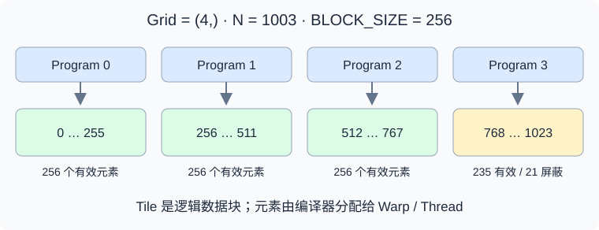
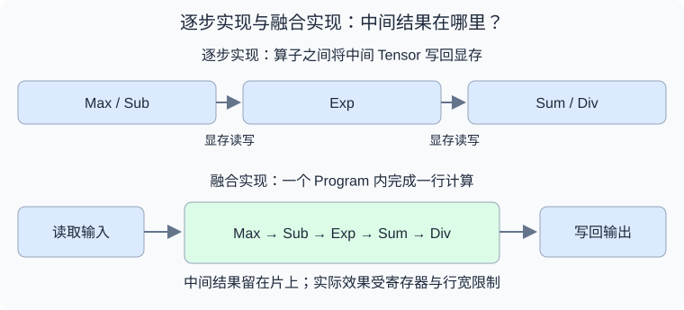
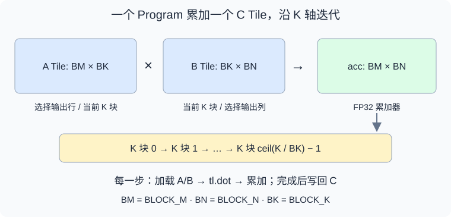

从 GPU 编程模型（Programming Model）的角度学习 Triton，最重要的是理解：
- 计算如何划分：一个 Program 负责哪一块数据？
- 数据如何访问：Pointer、Offset、Stride、Mask 如何共同描述访存？
- 计算如何表达：逐元素运算、Reduction、Broadcast、矩阵乘法如何作用于 Tile？
- 性能如何调整：Tile
Size、
num_warps、num_stages如何影响 GPU 资源？ - 结果如何验证：边界、数值精度、异步计时和调优如何处理？
建议先阅读 GPU Arch，建立
Thread、Warp、Block、SM 和存储层次的概念。下面以经典
triton.jit 与 triton.language
编程方式为主，结合 NVIDIA GPU 解释硬件映射。这里的 Triton 指
GPU 编程语言与编译器，与 NVIDIA Triton Inference Server
是不同项目。
一、Triton 在 GPU 编程中的位置
Triton 允许用 Python 语法描述 GPU Kernel，但 Kernel 内的代码由编译器生成 GPU 指令，并不是由 Python 解释器逐元素执行。
| 层次 | 程序员主要表达什么 | 需要关注什么 |
|---|---|---|
| PyTorch | 整体 Tensor 运算 | Shape、Dtype、Device、算子组合 |
| Triton | 一个 Program 内的数据块计算 | 分块、地址、边界、归约与资源配置 |
| CUDA C++ | Thread 级逻辑与线程协作 | 线程索引、Shared Memory、同步与指令 |
例如计算
y = x * scale + bias，可以把读取、乘法、加法和写回放进一个
Kernel，避免中间 Tensor 的显存读写和额外 Launch。
是否更快，需要结合输入规模、访存模式和已有实现测试；PyTorch 编译后的执行路径也可能已经完成算子融合。
二、Program、Grid 与 Tile

Triton 的基本思考方式是：一个 Program Instance 处理一个逻辑数据块（Tile），Grid 指定启动多少个 Program。
| 概念 | 意义 | 常见误解 |
|---|---|---|
| Program Instance | 一份 Kernel 逻辑的执行实例 | 不是一个 CUDA Thread |
| Grid | Program 的一维、二维或三维索引空间 | 不是 Tensor 的 Shape |
| Tile | 当前 Program 处理的数据区域 | 不一定是连续显存区域 |
tl.program_id(axis) |
当前 Program 在某个轴上的编号 | 不是 Thread ID |
num_warps |
参与一个 Program 执行的 Warp 数配置 | 不是数据块的元素数量 |
在常见 NVIDIA 执行路径中，一个 Program 通常映射到一个 CTA（CUDA Thread Block）；编译器负责将 Tile 元素分布到线程及其寄存器。进阶机制可能改变映射方式，因此应把 Program 理解为编程抽象。
例如，一个 Program 处理 1024 个元素，配置
num_warps=4，意味着由 4 个 Warp
协作处理这些元素。它不意味着启动 1024
个线程，也不意味着每个线程只处理一个元素。
Grid 中的 Program 可能分批调度到 SM。不同 Program 之间没有默认的执行先后关系，也不能依靠普通 Kernel 中的全局同步实现任意协作。
三、Host 代码与 Kernel 代码
一个完整算子通常包含两部分。
| 部分 | 执行位置 | 主要职责 |
|---|---|---|
| Host Wrapper | CPU / Python Runtime | 检查输入、分配输出、计算 Grid、启动 Kernel |
@triton.jit Kernel |
GPU | 计算地址、加载数据、执行运算、写回结果 |
Host 可以使用 PyTorch 分配 Tensor；Kernel 内使用
tl.load、tl.store 等 Triton
操作。不能把任意 Python 库或 PyTorch 运算直接放进
Kernel。
BLOCK_SIZE: tl.constexpr
表示编译期参数，常用于 Tile
Shape。不同编译期参数可能生成不同版本的
Kernel，首次调用可能包含编译开销。
Tensor 作为 Kernel 参数传入时转换为数据指针。Kernel 不会自动获得它的完整 Shape、Stride 和布局信息，因此需要由 Wrapper 显式传入相关参数。
四、第一个 Kernel：向量加法
下面的示例限定为同一 CUDA Device 上的一维、连续、相同 Shape 和 Dtype 的浮点 Tensor。
import torch
import triton
import triton.language as tl
@triton.jit
def vector_add_kernel(X, Y, Z, N, BLOCK_SIZE: tl.constexpr):
pid = tl.program_id(0)
offsets = pid * BLOCK_SIZE + tl.arange(0, BLOCK_SIZE)
valid = offsets < N
x = tl.load(X + offsets, mask=valid, other=0)
y = tl.load(Y + offsets, mask=valid, other=0)
tl.store(Z + offsets, x + y, mask=valid)
def vector_add(x, y):
assert x.is_cuda and y.is_cuda and x.device == y.device
assert x.ndim == y.ndim == 1 and x.shape == y.shape
assert x.is_contiguous() and y.is_contiguous()
assert x.dtype == y.dtype and x.is_floating_point()
z = torch.empty_like(x)
n = x.numel()
if n == 0:
return z
grid = lambda meta: (triton.cdiv(n, meta["BLOCK_SIZE"]),)
vector_add_kernel[grid](x, y, z, n, BLOCK_SIZE=256, num_warps=4)
return z
x = torch.randn(1003, device="cuda", dtype=torch.float32)
y = torch.randn_like(x)
z = vector_add(x, y)
torch.testing.assert_close(z, x + y)这里启动 4 个 Program，每个处理 256 个逻辑位置。最后一个 Program 只有 235 个位置有效，剩余位置通过 Mask 屏蔽。
tl.arange(0, BLOCK_SIZE) 生成当前 Program
内的逻辑索引；它不等于 CUDA 的
threadIdx.x。该写法使用 2 的幂作为
BLOCK_SIZE，输入长度本身不需要是 2 的幂。
这个例子的启动方式和指针传递规则可对照 官方 Vector Addition 教程。
五、Pointer、Stride 与 Mask
1. 指针运算按元素计数
对于指向 float32 的
X，X + 1
指向下一个元素，而不是下一个字节。
二维 Tensor 的地址可以写成：
\text{offset}(i,j)=i\times \text{stride}_0+j\times \text{stride}_1
例如，构造一个二维数据块：
rows = pid_m * BLOCK_M + tl.arange(0, BLOCK_M)
cols = pid_n * BLOCK_N + tl.arange(0, BLOCK_N)
ptrs = X + rows[:, None] * stride_m + cols[None, :] * stride_n
valid = (rows[:, None] < M) & (cols[None, :] < N)
tile = tl.load(ptrs, mask=valid, other=0)rows[:, None] 的 Shape 为
[BLOCK_M, 1]，cols[None, :] 为
[1, BLOCK_N]，通过广播形成
[BLOCK_M, BLOCK_N] 的地址块。
是否支持转置、切片等非连续输入，取决于地址公式是否正确使用 Stride，而不是取决于是否使用 Triton。
2. Mask 保护访存
Mask 应作用在 tl.load 和
tl.store 上。先读取越界地址，再用
tl.where 丢弃结果，不能保证访存安全。
Masked Load 的 other
还决定无效位置如何参与后续计算：
| 后续操作 | 常用填充值 | 原因 |
|---|---|---|
| 求和 | 0 |
不改变有效元素之和 |
| 求最大值 | -float("inf") |
不抬高最大值 |
| 求最小值 | float("inf") |
不降低最小值 |
| 矩阵乘法 K 轴补齐 | 0 |
不增加乘积贡献 |
相关操作的定义见 triton.language API。
六、Reduction 与 Softmax
Reduction 把一个轴上的多个元素合并为更少的结果，例如
tl.sum(x, axis=0) 和
tl.max(x, axis=0)。
对于一行数据，稳定 Softmax 的数学形式是：
m=\max_j x_j,\quad p_j=\exp(x_j-m),\quad y_j=\frac{p_j}{\sum_k p_k}
下面是每个 Program 处理一行的 Kernel 片段，要求
N > 0，Host 设置
BLOCK_SIZE = triton.next_power_of_2(N)，并以
(M,) 启动：
@triton.jit
def row_softmax_kernel(X, Y, N, stride_x, stride_y,
BLOCK_SIZE: tl.constexpr):
row = tl.program_id(0)
cols = tl.arange(0, BLOCK_SIZE)
x = tl.load(X + row * stride_x + cols,
mask=cols < N, other=-float("inf")).to(tl.float32)
shifted = x - tl.max(x, axis=0)
numerator = tl.exp(shifted)
denominator = tl.sum(numerator, axis=0)
tl.store(Y + row * stride_y + cols,
numerator / denominator, mask=cols < N)这里假设行内元素连续，输入为有限浮点值。FP32 中间计算有助于控制误差，最终写回时会转换为输出类型。

融合的关键是让中间结果留在片上，减少显存流量。理想情况下，每行只读取一次输入、写回一次输出；但如果行太长，寄存器压力、Spilling 和驻留并行度会使性能下降，需要进一步分块。
归约仍然需要底层线程协作。Triton 编译器根据数据布局生成相应操作，不能理解为所有元素都由一个线程顺序处理。可进一步参考 官方 Fused Softmax 教程。
七、矩阵乘法：从元素到 Tile
对于：
C\_{M\times N}=A\_{M\times K}B\_{K\times N}
一个 Program 可以负责 C 的一个
[BLOCK_M, BLOCK_N] 输出块，沿 K
轴逐步加载输入块并累加。

核心计算可以概括为以下伪代码：
acc = tl.zeros((BLOCK_M, BLOCK_N), dtype=tl.float32)
for k_tile in range(triton.cdiv(K, BLOCK_K)):
# 根据当前 K 块构造地址，对 M、N、K 边界分别 Mask。
a = tl.load(a_ptrs, mask=a_valid, other=0)
b = tl.load(b_ptrs, mask=b_valid, other=0)
acc = tl.dot(a, b, acc)
# 更新 a_ptrs / b_ptrs，前进到下一个 K 块。
# 将 acc 转为输出类型，并按 M、N 边界 Mask 写回。| 参数 | 增大时可能获得什么 | 可能付出什么代价 |
|---|---|---|
BLOCK_M / BLOCK_N |
更高的数据复用 | 更大的累加器与寄存器压力 |
BLOCK_K |
更少的循环迭代 | 更大的输入块与片上资源需求 |
num_warps |
更多线程参与计算 | 资源占用与协作成本变化 |
num_stages |
加载和计算的流水线重叠机会 | 更多缓冲与资源占用 |
tl.dot 是否使用 Tensor
Core，以及具体采用哪种指令，取决于目标
GPU、输入类型、Shape、布局和精度设置。FP32 输入也需要关注
input_precision，不能默认所有路径都等价于严格
FP32 乘法。
除了 Tile Shape，Program 的遍历顺序也影响相邻输出块能否复用 L2 中的输入数据。完整实现和分组调度见 官方 Matrix Multiplication 教程。
八、性能优化与 Autotune
优化前先确定瓶颈。
| 现象或算子 | 优先分析什么 |
|---|---|
| 大向量逐元素运算 | 有效带宽、合并访存、显存读写量 |
| 小输入 | Launch 开销、融合机会 |
| 行归约 | 行宽、寄存器压力、Program 数量 |
| GEMM | 数据复用、Tensor Core、流水线、边界浪费 |
| 非连续 Gather | 地址分布、缓存命中、负载均衡 |
Tile 越大、Warp 越多、Stage 越多，都不保证更快。它们改变了单个 Program 的工作量和资源需求，也影响 SM 同时能驻留多少 Program。
Autotune 可以在给定的候选集合中测量配置，例如在向量加法 Kernel 上添加：
@triton.autotune(
configs=[
triton.Config({"BLOCK_SIZE": 256}, num_warps=4),
triton.Config({"BLOCK_SIZE": 1024}, num_warps=4),
],
key=["N"],
)
@triton.jit
def vector_add_kernel(X, Y, Z, N, BLOCK_SIZE: tl.constexpr):
# 与前面的向量加法 Kernel 使用相同函数体。
...使用这个版本时，Host 保留依赖
meta["BLOCK_SIZE"] 的 Grid，并移除 Launch
中显式指定的 BLOCK_SIZE 和
num_warps，由候选配置提供。
调优会重复执行
Kernel。对于原子累加、原地更新等有副作用的算子，需要使用
reset_to_zero、restore_value
等机制保护输入输出状态。key
应覆盖会影响选择的关键维度，具体行为见 triton.autotune
文档。
九、正确性验证与性能测量
1. 先验证地址与边界
至少覆盖：
- 很小的输入、刚好整除 Tile 的输入、不能整除 Tile 的输入。
- Wrapper 允许的空输入与非连续输入。
- 支持的 Dtype、不同数值范围、归约长度。
- 多个 Program 是否重复写同一个输出位置。
矩阵边界错误往往来自 M、N、K 的 Mask 混用；非连续 Tensor 的错误往往来自把 Shape 当作 Stride。
2. 数值正确不等于逐位一致
浮点归约顺序、累加精度、近似数学函数和 Tensor Core
精度路径都可能带来误差。对比 PyTorch
或高精度参考时，应根据算子和 Dtype 设置合理的
atol、rtol，并观察误差随输入规模的变化。
3. 正确计时异步执行
GPU Kernel Launch 通常是异步的。直接用 CPU 时间包围一次调用，可能主要测到提交开销。
完成正确性检查并预热后，可以使用：
import triton.testing
# 先调用，排除首次编译与调优。
vector_add(x, y)
ms = triton.testing.do_bench(lambda: vector_add(x, y))这个测量包含 Wrapper 和输出分配路径。对比其他实现时应采用相同口径；只测 Kernel 时，可以预分配输出并直接启动 Kernel。
向量加法的有效带宽可以估算为：
BW\_{\text{effective}}=\frac{3N\times \text{element size}}{t}
其中包含两次输入读取和一次输出写入。它是按逻辑数据量计算的有效带宽，不等同于硬件计数器测得的实际 HBM 流量。
当前示例用于编程模型学习，没有封装反向传播。训练场景还需要实现梯度并与 PyTorch Autograd 接入。
十、把 Triton 基础映射到 LLM 算子
| 算子 | 基础能力 | 进一步需要理解什么 |
|---|---|---|
| Activation / Residual | 逐元素计算、Mask、融合 | 带宽与 Launch 开销 |
| RMSNorm / LayerNorm | Reduction、Broadcast | 长行分块、数值稳定性 |
| Linear / GEMM | 二维 Tile、tl.dot |
Tensor Core、流水线、数据复用 |
| Attention | GEMM、归约、Mask | Online Softmax、因果边界、IO 优化 |
| Paged Attention | 指针、Stride、Gather | 页表、KV Cache 布局、负载均衡 |
| MoE | 多组 Tile 与调度 | Token Routing、Grouped GEMM |
| Quantization | 类型转换、归约、缩放 | Scale 粒度、布局与精度 |
建议按向量加法、融合逐元素算子、行归约、Softmax、矩阵乘法、Attention 的顺序学习。每一步都同时回答三个问题：当前 Program 负责哪些数据，数据如何在显存和片上移动，以及什么资源限制了执行效率。
掌握这些概念后，再学习 Tensor Descriptor、TMA、Warp Specialization 和更显式的布局控制，会更容易理解它们解决的实际问题。这些进阶能力与 Triton 版本、后端和 GPU 架构相关，应以对应环境的文档为准。